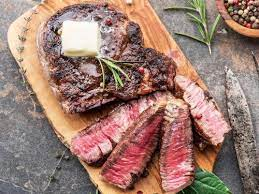

Medium Rare Steak

Description
Ingredients
- 2 lbs New York strip steak
- 1 tbsp vegetable oil (or any oil with a high smoke point)
- 2 tsp salt
- 1 1/2 tsp black pepper
- 3 tbsp unsalted butter
- 6 cloves garlic (peeled and quartered)
- 2 sprigs fresh rosemary
- 2-3 sprigs fresh thyme
- 1 sprig fresh sage
Steps
- Pat each steak dry with paper towels and liberally season each side of the steak with salt and pepper, or to taste.
- In a cast iron skillet, heat ½ to 1tbsp of vegetable oil on medium high heat, ensuring it coats the entire pan. Once the oil is hot, transfer your steaks to the skillet .Sear the steaks on each side for about 3-4 minutes each, or until a brown crust has formed. Use tongs to render the white fat along the sides of the steak and sear the edges, for about 1-2 minutes per side. Reduce the heat from medium-high to medium and add in the butter, garlic, and herbs. Continuously spoon the butter sauce over the steaks. Continue to baste the steaks until they are about 10 degrees away from your desired temperature (they will continue to cook while they rest).
- Once the steaks have reached their desired temperature, transfer them to a cutting board and loosely cover with aluminum foil. Allow the steak to rest 10 minutes before slicing. Slice the steak into ½ to 1 inch thick strips to serve. Serve with extra butter sauce.